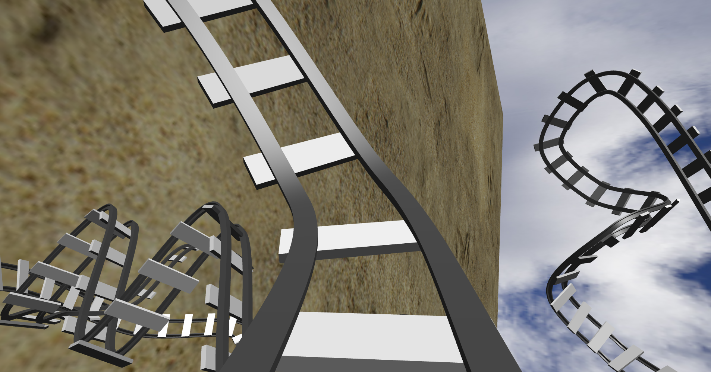
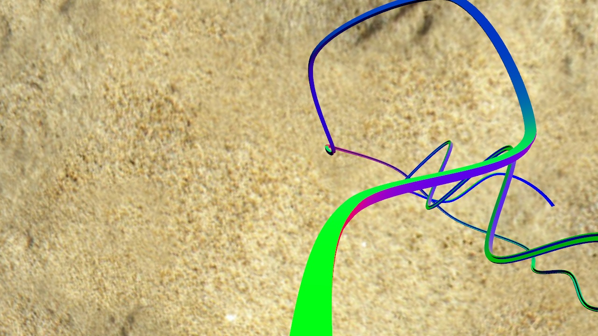
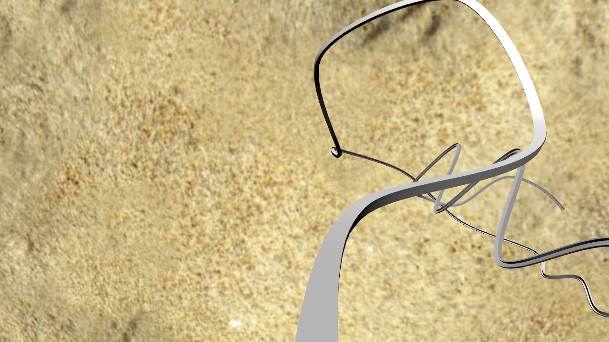

An OverviewIn this assignment, you will use Catmull-Rom splines along with OpenGL core profile shader-based lighting and texture mapping to create a roller coaster simulation. You will implement two shaders: one for texture mapping (to render the ground), and one for Phong shading (to render the roller coaster rail). The simulation will run in a first-person view, allowing the user to "ride" the coaster in an immersive environment. As with the previous assignment, you will create an interesting animation after finishing the program itself. This time, the objective of your animation is to show off both your coaster and the features of your program.
Why?Now that the first programming assignment has familiarized you with working in OpenGL, this assignment asks you to utilize some more interesting features of the library in the design of a more significant and more entertaining application. This assignment teaches you how to use multiple shaders in a scene simultaneously. This is a very practical skill; as most scenes in real applications use more than one shader. After completing this assignment, you should have a solid understanding of:
This assignment should be challenging, at least as much as the first assignment and likely more. However, it should also be a lot of fun! Please start early. Background InformationIn order to create the track for your roller coaster, you'll need to render a spline sequence which represents the entire length of your track. In order to do so, you will need to implement a function that takes four control points (p0 through p3) and a floating point value (u) from 0 to 1, and computes the corresponding position on the spline segment defined by these four control points. Drawing a single spline from four control points isn't that exciting--you'll need to use several control points in sequence and draw spline segments along them, starting from the first four points and proceeding until you draw the final spline for the last four points. This will allow you to represent a long, elaborate curve for your coaster. We'll be using Catmull-Rom splines for the representation of your coaster. These were defined along with their geometric constraints in lecture, so please see the corresponding slides for information. |
Level 0 (starter code): You can find the starter code and supplementary files here. You should unzip the starter code into a new folder. Then, copy your hw1 solution into this folder. Then, merge the starter code in hw2-starter.cpp into hw1.cpp. Do not worry about using the "hw1.cpp" filename even in hw2. Similarly, it is OK to use Visual Studio project/solution names that involve "hw1". Feel free to rename the main file, say, to hw2.cpp, but this is not required.
Level 1 (spline): First, please implement your spline function and draw some splines to the screen. In order to do this, use the same shader and setup as in hw1. We call this shader the "hw1 shader". Sometimes, we will also refer to it as the "milestone shader". A point on a single Catmull-Rom spline segment is given by:
p(u) = [u^3 u^2 u 1] M C, (1)
where M is the Catmull-Rom spline basis matrix, C is the control matrix, and parameter u varies on the interval [0,1]. The exact forms for M and C are given in the lecture notes. You may use s=1/2. Note that the starter code comes with a routine to multiply matrices, which you can use to perform the matrix multiplications. You are encouraged to use this routine, but are not required: feel free to use any other matrix multiplication library of your choice if you wish. Note that the same code can also be used to multiply a matrix with a vector, as a vector is simply a matrix with only one column.
Please consult the spline lecture notes (slide "How to Draw Spline Curves") for how to render a spline. You may use the simplest, "brute-force" method where you vary the parameter u by some fixed value, for example 0.001. Insert each value of u into equation (1) (above), to obtain the point location p(u). For example: u = 0.0, 0.001, 0.002, ..., 0.999, 1.0. Then, connect consecutive points with lines, for example, by using GL_LINES. Note that in order to see the spline, you must setup your OpenGL camera. For a start, you can just use a stationary camera, similar to the first assignment (we recommend using OpenGLMatrix::Perspective). You may use the keyboard/mouse to view the scene from different angles, or zoom in and out, just like in the first assignment. We provide a set of "track" files containing control points to define some simple splines, and starter code to read in a sequence of these files and convert them to sequences of control points that you can use. You can safely assume that each spline file (i.e. splines/*.sp) has at least 4 control points. You are encouraged to experiment with .sp files, creating your own spline files as needed for your personalized solution (well-documented creativity will be awarded).
Level 2 (the ride): Now, implement the ability to ride the coaster. You can do so by moving your camera at a constant speed (in u) along the spline (creating physically realistic motion is extra credit). Properly orienting your camera is a challenging problem! You'll want to have your camera facing "forward" (along the tangent to your spline) as it moves. The tangent vector can be computed by differentiating equation (1) with respect to u, that is: t(u) = p'(u) = [3u^2 2u 1 0] M C. Note that you need to normalize this vector to obtain a unit length tangent. Also, you need to make the "up" vector of your camera follow some continuous path of normals to the spline. A cheap method to decide your up vector is to always set it equal to the normal of your ground plane--however, this is very unrealistic for many splines. Another method is described here. Use the milestone shader for rendering.
Level 3 (rail cross-section): Modify the appearance of the coaster itself: instead of just a line, make your track look like a track, by rendering a cross-section of the rail. In order to render the cross-section, you can use the tangent, normal and binormal described in Level 4. Suppose p0 and p1 are two consecutive points along the spline. You can then compute vertices v0, v1, ..., v7, and render a tube as described in the following PDF, and further illustrated here. In this example cross-section is a square, but you may change that to other shapes, such as a circle or ellipse. Render the rail triangles using the milestone shader. Set the (r,g,b) color of each vertex to the normal of the triangle. That is, if the normal is n=(nx, ny, nz), set r = nx, g = ny, b = nz. Do not worry if some components are negative. OpenGL will just clamp such values to 0.0. This step will be useful in the next levels.
Level 4 (ground): Next, add the ground. You can use a plane for the ground. It should be texture-mapped with an image of your choice. You need to write a vertex and fragment shader to do texture mapping. You then need to create a new pipeline program in your C/C++ code, and make other necessary modifications. We call this shader the "texture shader". The texture shader must co-exist in your code with the milestone shader. Each one should be a separate pipeline program. The texture shader should be used to render the ground plane, and the milestone shader should be used to render the rail cross-section (same as in Level 3). Both objects should be visible on the screen at the same time, each one shaded with their respective shader. There are plenty of free texture sites on the Web. One choice is texture forest, and there are many others; search for them on Google. For image size, good choices are 512x512 or 1024x1024. You can use any software you wish to scale and/or edit your texture image.
Level 5 (Phong shading): Modify the milestone shader so that it computes Phong shading (also known as "per-pixel lighting"). Use 1 directional light to light the scene. Rename the "color" shader variable (which contains normals, as explained in Level 3) into "normal". In this way, there is no need to re-create the VBO for normals. You need to implement both the vertex and fragment shaders to perform Phong shading. You can see the example vertex and fragment shaders in the lecture "Lighting and Shading" for how to do this. The ground plane should continue to be rendered using the texture shader, in the same way as in Level 4. The rail object should be rendered using Phong shading. Both the ground plane and the rail should be visible at the same time.
|
 |
 |
Here is an example video solution of level 5.
After this is all done, add some fun extras! Do not attempt extra credit until you have successfully finished everything else, or else you run the risk of running out of time.
Just like with the first assignment, you are required to submit an animation, represented by a series of JPEG images which are screenshots from your program. We allow for more frames this time as your coaster may take more time to demonstrate--please name your JPEG frames 000.jpg, 001.jpg, and so on. Do not exceed 1000 frames. The frame rate for the animation, again, is 15fps.
Please submit your code along with your JPEG images and readme to the Blackboard. Include all files that were already in the starter code. Your submission should include the shader files, Makefiles, and all *.h and *.cpp files in all subfolders. Also include the compiled executable. The safest approach is to upload the entire homework folder. You can cut some space by not uploading the compiled object files (*.obj on Windows, *.o on Linux/Mac) and other intermediate files generated by the compiler such as *.pch files and similar. After submission, please verify that your zip file has been successfully uploaded.
Levels 0 and 1 must be completed by the milestone deadline shown at the top of this page. Please upload to the blackboard, to "Assignment 2 Milestone", a screenshot image (1280x720) of the result of Level 1. No code submission is needed. You can use any of the provided tracks. The screenshot should have a good camera angle (not necessarily positioned on the track). The screenshot image should have your first and last name shown on the image, and the filename of the employed .sp file. You can add this text using GIMP or Photoshop.
Milestone grading: we will deduct 10 points (from the final hw2 score) for a missing or late milestone submission. Incomplete or incorrect submissions will receive a deduction of 0-10 points. There are no late days for the milestone.
This assignment is much more open-ended as to what you may choose to implement for extra credit. You may be awarded credit for any creative or interesting solution to an issue in your implementation, as long as it is well-documented in your readme file. Below are some ideas you might want to think about if you have the time:
Please note that the amount of extra credit awarded will not exceed 20% of this assignment's total value.
{kind=link}